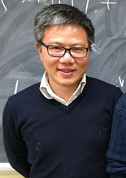

Ngô Bảo Châu | |
|---|---|
 Ngô Bảo Châu in 2014 | |
| Born | 28 June 1972 |
| Alma mater | École Normale Supérieure Université de Paris-Sud Université Sorbonne Paris Nord |
| Known for | Proof of the fundamental lemma |
| Awards | Clay Research Award (2004) Oberwolfach Prize (2007) Sophie Germain Prize (2007) Fields Medal (2010) Legion of Honour (2011) |
| Scientific career | |
| Fields | Mathematics |
| Institutions | Université Sorbonne Paris Nord Université Paris-Sud Institute for Advanced Study University of Chicago University of Hong Kong |
| Thesis | Le lemme fondamental de Jacquet et Ye en égales caractéristiques (1997) |
| Gérard Laumon | |
Ngô Bảo Châu (Vietnamese: [ŋo ɓa᷉ːw cəw], born 28 June 1972)[1] is a Vietnamese-French mathematician at the University of Hong Kong, best known for proving the fundamental lemma for automorphic forms (proposed by Robert Langlands and Diana Shelstad). He is the first Vietnamese national to have received the Fields Medal.[2][3][4][5][6]
Ngô Bảo Châu was born in 1972, the son of an intellectual family in Hanoi, North Vietnam. His father, professor Ngô Huy Cẩn, is full professor of physics at the Vietnam National Institute of Mechanics. His mother, Trần Lưu Vân Hiền, is a physician and associate professor at an herbal medicine hospital in Hanoi.
The beginning of Châu's schooling was at an experimental elementary school that had been founded by the revolutionary pedagogue Hồ Ngọc Đại, but when his father returned from the Soviet Union with his doctoral degree, he decided that Châu would learn more in traditional schools and enrolled him in the "chuyên toán" (special classes for gifted students in mathematics) at the Trưng Vương Middle School.[7] At age 15, Châu entered the special mathematics class at the High School for Gifted Students, Hanoi University of Science (Khối chuyên Tổng Hợp – Đại học Khoa Học Tự Nhiên Hà Nội[8]), formerly known as the A0-class. In grades 11 and 12, Châu participated in the 29th and 30th International Mathematical Olympiads (IMO) and became the first Vietnamese student to win two IMO gold medals,[9] of which the first one was won with a perfect score (42/42).[10]
After high school, Châu expected to study in Budapest, but in the aftermath of the fall of Communism in Eastern Europe, the new Hungarian government halted scholarships to students from Vietnam.[11] After visiting Châu's father, Paul Germain, secretary of the French Academy of Sciences, arranged for Châu to study in France. He was offered a scholarship by the French government for undergraduate study at the Paris VI University, then in 1992, he entered the École Normale Supérieure. He obtained a PhD in 1997 from the Universite Paris-Sud under the supervision of Gérard Laumon. He became a member of CNRS at Sorbonne Paris North University from 1998 to 2005, and defended his habilitation degree there in 2003. He holds both Vietnamese and French citizenship.[12]
Châu became a professor at Paris-Sud 11 University in 2005. In 2005, at age 33, Châu received the title of professor in Vietnam, becoming the country's youngest-ever professor.[10] Since 2007, Châu has worked at the Institute for Advanced Study, Princeton, New Jersey, as well as the Hanoi Institute of Mathematics.[13] He joined the mathematics faculty at the University of Chicago on 1 September 2010. In addition, since 2011 he has been Scientific Director of the newly founded Vietnam Institute for Advanced Study in Mathematics (VIASM).[14] In 2016 Châu was Co-General Chair of Asiacrypt the first time that the Asian cryptography conference was held in Vietnam.[15] Starting 1 July 2023, Châu has been serving as the new Chair of the Department of Mathematics at the University of Chicago.[16]
On 5 February, the University of Hong Kong announced that Châu is to join the Department of Mathematics from June 2026.[17]
Châu first came to prominence by proving, in joint work with Gérard Laumon, the fundamental lemma for unitary groups. Their general strategy was to understand the local orbital integrals appearing in the fundamental lemma in terms of affine Springer fibers arising in the Hitchin fibration. This allowed them to employ the tools of geometric representation theory, namely the theory of perverse sheaves, to study what was initially a combinatorial problem of a number-theoretic nature. Chau eventually succeeded in formulating the proof for the fundamental lemma for Lie algebras in 2008.[10] Together with earlier results from Jean-Loup Waldspurger, who had shown that the full fundamental lemma results from this then missing result, this completed the proof of the fundamental lemma in all cases. As a result, Châu was awarded a Fields Medal in 2010.
Ngô Bảo Châu was the co-author of the Vietnamese children's book Ai and Ky in the land of the invisible numbers.
In 2004, Châu and Laumon were awarded the Clay Research Award for their achievement in solving the fundamental lemma for the case of unitary groups.[10] Châu's proof of the general case was selected by Time as one of the Top Ten Scientific Discoveries of 2009.[13] In 2010, he received the Fields Medal. By decree on 22 April 2011, he was awarded a Knight of France's Legion of Honour.[18] In 2012, he became a fellow of the American Mathematical Society.[19] In 2021, he became an honorary member of the London Mathematical Society.[20][21]
{kind=link}